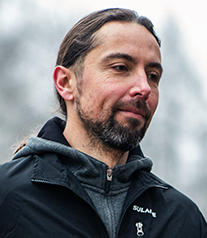

Faculty of Electrical Engineering,
Czestochowa University of Technology, Poland
artur.durajski@gmail.com
I am a physicist and manager with strong communication and team collaboration skills, supported by expertise in project management methodologies such as PRINCE2, DevOps, and ITIL4. I take a proactive, goal-oriented approach to my work, combining advanced research, analytical thinking, and effective planning to manage complex tasks and multiple projects efficiently. Alongside my scientific activity, I have held senior academic leadership roles, including Head of the Institute of Physics and Head of the Department of Solid State Physics, where I was responsible for strategic planning, research coordination, and team management. My research interests focus on phonon-mediated superconductors, with particular emphasis on hydrogen-rich and graphene-like 2D systems, studied using first-principles calculations and advanced computational techniques to understand electronic structure, phonon interactions, and the mechanisms governing superconductivity.
2025 - present | Faculty of Electrical Engineering | Department of Automation, Electrical Engineering and Optoelectronics | Czestochowa University of Technology | Poland
2014 - 2025 | Faculty of Production Engineering and Materials Technology | Department of Physics | Czestochowa University of Technology | Poland
2019 | Habilitation in Physical and Natural Sciences | Faculty of Fundamental Problems of Technology, Wroclaw University of Science and Technology
2014 | Doctor of Physical Sciences | Faculty of Physics and Astronomy, University of Zielona Gora
2011 | Master of Management | Faculty of Management, Czestochowa University of Technology
2011 | Master of Science in Physics | Faculty of Process Engineering, Materials Engineering and Applied Physics, Czestochowa University of Technology
2023-2027 | New ternary hydrides: high-temperature superconducting state at low pressure | Polish National Science Centre (NCN) under grant No. 2022/47/B/ST3/00622 | Budget: 1 352 680,00 PLN | Project team: Artur P. Durajski, Izabela Wrona, Pawel Niegodajew & Radoslaw Szczesniak (Czestochowa University of Technology), Yinwei Li (Jiangsu Normal University), Peng Song (Tohoku University)
2017-2020 | The crystal structure and thermodynamic properties of new high-temperature superconductors | Polish National Science Centre (NCN) under grant No. 2016/23/D/ST3/02109 | Budget: 330 400,00 PLN | Project team: Artur P. Durajski (Czestochowa University of Technology), Yinwei Li (Jiangsu Normal University)
| as Project Team Member2024-2026 | Preventing wall effect in random packed beds | Polish National Science Centre (NCN) under grant No. 2023/51/B/ST8/01624 | Budget: 903 165,00 PLN | Project team: Pawel Niegodajew, Maciej Marek, Artur P. Durajski, Michal Wilczynski (Czestochowa University of Technology)
2023 | Minister of Education and Science Award for Significant Achievements in the Field of Scientific Activity
2018 | Polish Ministry of Science and Higher Education Scholarship for Outstanding Young Scientists
2017 | Foundation for Polish Science (FNP) Scholarship START for the Best Young Polish Scientists
2025 | I. A. Wrona, P. Niegodajew, A. P. Durajski, High-temperature ternary superhydrides: A strategic roadmap to optimal superconducting parameters, Adv. Funct. Mater. 35, 2423680 (2025).
2024 | I. A. Wrona, P. Niegodajew, A. P. Durajski, A recipe for an effective selection of promising candidates for high-temperature superconductors among binary hydrides, Mater. Today Phys. 46, 101499 (2024).
2023 | Z. Wu, Y. Sun, A. P. Durajski, F. Zheng, V. Antropov, K.-M. Ho, S. Wu, Effect of doping on the phase stability and superconductivity in LaH10, Phys. Rev. Mater. 7, L101801 (2023).
2022 | P. Niegodajew, A. P. Durajski, P. Rajca, K. M. Gruszka, M. Marek, Experimental and numerical study on the orientation distribution of cylindrical particles in random packed beds, Chem. Eng. J. 432, 134043 (2022).
2021 | A. P. Durajski, R. Szczesniak, New superconducting superhydride LaC2H8 at relatively low stabilization pressure, Phys. Chem. Chem. Phys. 23, 25070 (2021).
2020 | A. P. Durajski, R. Szczesniak, Y. Li, C. Wang, J. H. Cho, Isotope effect in superconducting lanthanum hydride under high compression, Phys. Rev. B 101, 214501 (2020).